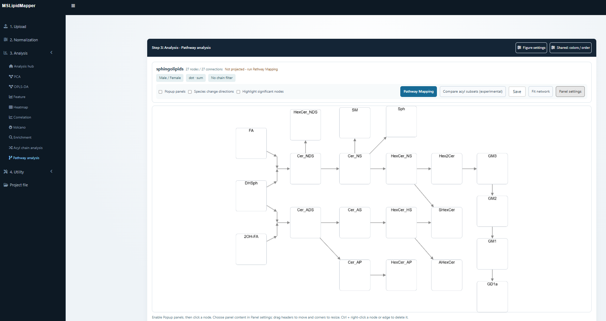
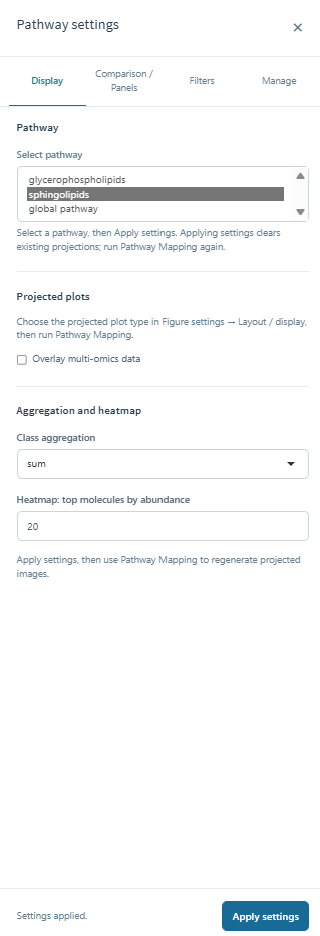
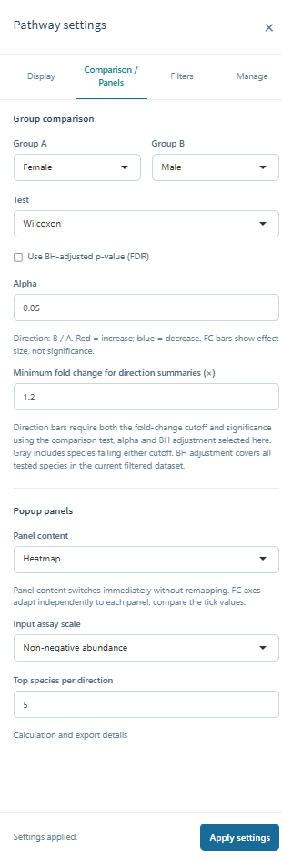
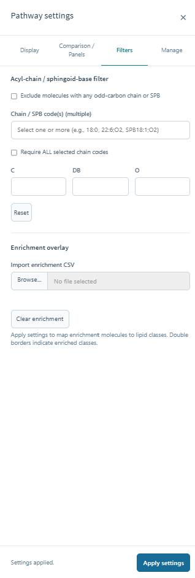
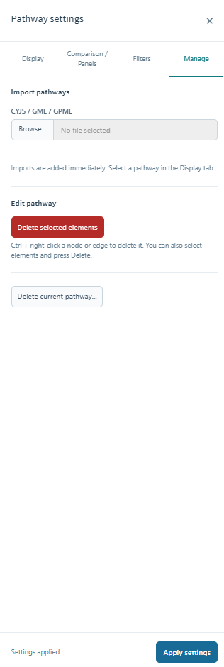
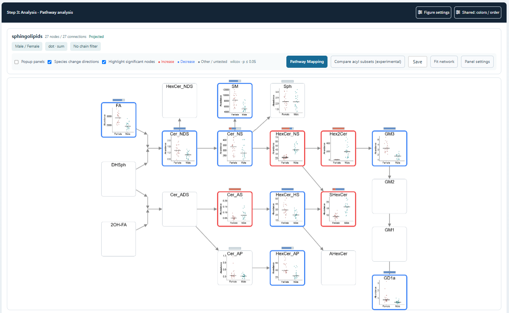

Pathway maps and export
View abundances aggregated by lipid class on a pathway map and save your results.
View lipid metabolism pathways
Open 3. Analysis → Pathway analysis. The example shows the sphingolipids network before data projection. Its status reads Not projected - run Pathway Mapping.


- Review the selected pathway network and the comparison shown above it. This example displays Male / Female.
- Click Pathway Mapping to open the mapping workflow.
- Review the mapping settings and apply them to display the abundance data on the network.
- Enable Popup panels and click a node to inspect its data. Use Panel settings to choose panel content.
Use Fit network to fit the graph into the visible area.
Configure pathway display
In Pathway settings, open the Display tab.
- Under Select pathway, choose a network. The screenshot selects sphingolipids.
- Under Class aggregation, choose how molecular abundances are summarized for each lipid class. The example uses sum.
- Set Heatmap: top molecules by abundance to the number of molecules to show. The screenshot uses
20. - Click Apply settings.
- Run Pathway Mapping to regenerate the projected plots with the applied settings.
To choose the projected plot type, use Figure settings → Layout / display, then run Pathway Mapping. When working with additional omics data, the Display tab also provides Overlay multi-omics data.


Configure comparisons and popup panels
Open the Comparison / Panels tab. In this example, Group A is Female and Group B is Male. Direction is calculated as B / A, so an increase corresponds to higher abundance in Male samples.
- Select the two groups and the statistical Test. The screenshot uses Wilcoxon.
- Choose whether to use BH-adjusted p-value (FDR), and set Alpha. The example leaves correction unchecked and uses
0.05. - Set Minimum fold change for direction summaries (×). The example uses
1.2. Direction summaries require both the fold-change cutoff and the selected significance criterion. Gray includes species failing either criterion. BH adjustment covers all tested species in the current filtered dataset. - Choose Panel content for the popup panels. The screenshot selects Heatmap. Panel content switches immediately without remapping.
- Select the Input assay scale matching your data. The example uses Non-negative abundance. Set Top species per direction for species-change panels, shown as
5here. - Click Apply settings to commit the comparison settings, then rerun Pathway Mapping to refresh projected data as needed.
Fold-change bars represent effect size. Use the significance criterion and its annotations to assess statistical significance. Fold-change axes adapt independently to each popup panel, so compare their tick values.


Filter the mapped lipids
Open Filters to restrict the lipid molecules used in the pathway view.
- Check Exclude molecules with any odd-carbon chain or SPB to remove molecules containing an odd-carbon chain or sphingoid base.
- Select one or more Chain / SPB code(s) (multiple). Use Require ALL selected chain codes when each retained molecule must contain every selected code.
- Use C, DB, and O to specify chain carbon count, double-bond count, and oxygen count.
- Use Reset to clear the chain filter controls.
Click Apply settings and rerun Pathway Mapping to update the projection for the selected lipids.
Under Enrichment overlay, use Import enrichment CSV to load enrichment results. Apply settings to map enrichment molecules to lipid classes. Double borders identify enriched classes. Use Clear enrichment to remove the overlay.


Import and edit pathway networks
Open Manage. Under Import pathways, click Browse... to import a CYJS / GML / GPML file. Imported pathways are added immediately. Select the imported network in the Display tab.
To edit a network, select nodes or edges and click Delete selected elements, or press Delete. You can also Ctrl + right-click a node or edge to delete it. Use Delete current pathway... to remove a pathway.


Review the mapped network
After mapping, confirm that the status changes to Projected. Nodes with mapped data display abundance plots. In this example, the comparison is Male / Female, and the node plots show the Female and Male sample distributions.
- Check Species change directions to display the molecular-species direction summaries above the nodes.
- Check Highlight significant nodes to display significance highlighting on node borders.
- Read the direction legend and the statistical method and threshold shown in the toolbar. The supplied screenshot displays wilcox · p ≤ 0.05.
The legend uses red for increases, blue for decreases, and gray for other or untested results. Interpret directions relative to the displayed comparison. A blank node has no abundance plot in the current projection.


Inspect molecular species in popup panels
- Enable Popup panels.
- Click a node with mapped data to open its detail panel. Click additional nodes to compare their panels.
- Use Panel settings to select the panel content. The example shows Species changes.
- Drag panel headers to move panels and drag their corners to resize them. Use Arrange panels to arrange open panels.
- Click the × in a panel header to close that panel, or Close all panels to close them together.
Each Species changes panel lists individual lipid species and their log₂ fold changes for the displayed comparison. Here, Male / Female means positive values indicate higher abundance in Male samples and negative values indicate higher abundance in Female samples. Red bars show increases and blue bars show decreases. Asterisks mark species meeting the current significance criterion displayed in the toolbar.

View heatmaps in popup panels
Use Panel settings to choose heatmap content for the popup panels. The example below shows heatmaps for Cer_NDS, Cer_NS, HexCer_NS, and Hex2Cer.
Each heatmap displays lipid species in rows and samples in columns, with Female and Male groups labeled above the matrix. Read relative abundance patterns using the Z-score legend in each panel. Red indicates higher standardized values and purple indicates lower standardized values.
Resize a panel to inspect its labels and patterns more closely. Keep several panels open to compare species-level patterns across pathway classes.

Export figures and save your project
Save the pathway figure
- Complete Pathway Mapping and arrange the network and any open popup panels.
- Click Save in the pathway toolbar.
- Select Network PDF to export the network, PDF with panels / popups to include popup panels, or Figure SVG (popup panels) for an SVG figure with popup panels.
Save a project for later
Use the export controls on each analysis page to save figures. To save your workspace, open Project file and select Prepare project file. When the file is ready, select Download prepared project to save the .mslm.rds file. To resume your work, select Restore project (.mslm.rds) on the same page.
Export a pathway PDF from the command line
Use a YAML configuration file to generate pathway PDFs with the same settings from the command line.
Rscript inst/scripts/mslipidmapper.R pathway --config inst/extdata/examples/pathway-cli.ymlInstall the package, then run this example from the MSLipidMapper source directory. Command-line options